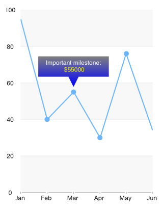

Chart: Annotations
Annotations are visual elements that can be used to highlight certain areas on the plot area and denote statistical significance.
TKChart provides the following types of annotations:
- TKChartGridLineAnnotation
- TKChartBandAnnotation
- TKChartCrossLineAnnotation
- TKChartBalloonAnnotation
- TKChartLayerAnnotation
- TKChartViewAnnotation
Adding annotations to the chart
TKChart contains an annotations collection and annotations can be added to the chart by calling the addAnnotation method. The following code adds a horizontal grid line annotation in TKChart. The annotation requires an axis and a value in order to be initialized correctly.
Objective-C
[chart addAnnotation:[[TKChartGridLineAnnotation alloc] initWithValue:@80 forAxis:chart.yAxis]];
Swift
chart.addAnnotation(TKChartGridLineAnnotation(value: 80, forAxis: chart.yAxis))
The annotation visibility can be controlled by setting its hidden property. The annotation visual appearance can be changed by using its style property.
Annotation types
Conceptually, there are three types of annotations - grid line, band and point annotations. Below is a comparison for each one depending on the scenario.
Grid line
The grid line annotation represents a vertical or horizontal line which crosses the entire plot area. It is specified by using the TKChartGridLineAnnotation.
The line color can be customized by using the annotation initializer:
Objective-C
TKStroke *stroke = [TKStroke strokeWithColor:[UIColor redColor] width:0.5];
[chart addAnnotation:[[TKChartGridLineAnnotation alloc] initWithValue:@80 forAxis:chart.yAxis withStroke:stroke]];
Swift
let stroke = TKStroke(color: UIColor.redColor(), width:0.5)
chart.addAnnotation(TKChartGridLineAnnotation(value: 80, forAxis: chart.yAxis, withStroke: stroke))

Plot band
The TKChartBandAnnotation is either horizontal or vertical strip, crossing its corresponding axis, specified by its range property.
Objective-C
TKRange *range = [[TKRange alloc] initWithMinimum:@10 andMaximum:@40];
UIColor *color = [UIColor colorWithRed:1. green:0. blue:0. alpha:0.4];
TKFill *fill = [TKSolidFill solidFillWithColor:color];
[chart addAnnotation:[[TKChartBandAnnotation alloc] initWithRange:range forAxis:chart.yAxis withFill:fill withStroke:nil]];
Swift
let range = TKRange(minimum: 10, andMaximum: 40)
let color = UIColor(red: 1.0, green: 0, blue: 0, alpha: 0.4)
let fill = TKSolidFill(color: color)
chart.addAnnotation(TKChartBandAnnotation(range: range, forAxis: chart.yAxis, withFill: fill, withStroke: nil))

Point annotations
Point annotations render their content starting at specific position. Besides the position, a pixel based offset could be added to the point annotation by specifying the offset property.
Cross line annotation
The TKChartCrossLineAnnotation is a point annotation which represents two crossing lines with a point at the crossing position.
Objective-C
[chart addAnnotation:[[TKChartCrossLineAnnotation alloc] initWithX:@900 Y:@60 forSeries:chart.series[0]]];
Swift
chart.addAnnotation(TKChartCrossLineAnnotation(x: 900, y: 60, forSeries: chart.series()[0] as! TKChartSeries))

Balloon annotation
The TKChartBalloonAnnotation displays a balloon-like shape next to the position specified by its arguments. The verticalAlign and horizontalAlign properties allow to position the annotation precisely. The balloon will correct its position automatically if there is not enough space at the specified coordinates.
The following example demonstrates different balloon positions based on the horizontal and vertical alignment:
Objective-C
TKChartBalloonAnnotation *leftBalloon = [[TKChartBalloonAnnotation alloc] initWithX:@"NearBy" Y:@58 forSeries:chart.series[0]];
leftBalloon.text = @"left aligned";
leftBalloon.style.horizontalAlign = TKChartBalloonHorizontalAlignmentLeft;
leftBalloon.style.verticalAlign = TKChartBalloonVerticalAlignmentCenter;
[chart addAnnotation:leftBalloon];
TKChartBalloonAnnotation *bottomBalloon = [[TKChartBalloonAnnotation alloc] initWithText:@"bottom aligned" X:@"Family Store" Y:@59 forSeries:chart.series[0]];
bottomBalloon.style.verticalAlign = TKChartBalloonVerticalAlignmentBottom;
[chart addAnnotation:bottomBalloon];
Swift
let leftBalloon = TKChartBalloonAnnotation(x: "NearBy", y: 58, forSeries: chart.series()[0] as! TKChartSeries)
leftBalloon.text = "left aligned"
leftBalloon.style.horizontalAlign = TKChartBalloonHorizontalAlignmentLeft
leftBalloon.style.verticalAlign = TKChartBalloonVerticalAlignmentCenter
chart.addAnnotation(leftBalloon)
let bottomBalloon = TKChartBalloonAnnotation(text: "bottom aligned", x: "Family Store", y: 59, forSeries: chart.series()[0] as! TKChartSeries)
bottomBalloon.style.verticalAlign = TKChartBalloonVerticalAlignmentBottom
chart.addAnnotation(bottomBalloon)

The attributedText property can be used to present formatted text with NSAttributedString. The following code demonstrates this:
Objective-C
NSMutableParagraphStyle *paragraphStyle = [[NSParagraphStyle defaultParagraphStyle] mutableCopy];
paragraphStyle.alignment = NSTextAlignmentCenter;
NSMutableAttributedString *attributedText = [[NSMutableAttributedString alloc] initWithString:@"Important milestone:\n $55000" attributes:@{ NSForegroundColorAttributeName:[UIColor whiteColor], NSParagraphStyleAttributeName:paragraphStyle }];
[attributedText addAttribute:NSForegroundColorAttributeName value:[UIColor yellowColor] range:NSMakeRange(22, 6)];
TKChartBalloonAnnotation *balloon = [[TKChartBalloonAnnotation alloc] initWithX:@"NearBy" Y:@58 forSeries:chart.series[0]];
balloon.attributedText = attributedText;
[chart addAnnotation:balloon];
Swift
var paragraphStyle: NSMutableParagraphStyle = NSParagraphStyle.defaultParagraphStyle().mutableCopy() as! NSMutableParagraphStyle
paragraphStyle.alignment = NSTextAlignment.Center
var attributedText = NSMutableAttributedString(string: "Important milestone:\n $55000",
attributes: [NSForegroundColorAttributeName:UIColor.whiteColor(), NSParagraphStyleAttributeName:paragraphStyle,])
attributedText.addAttribute(NSForegroundColorAttributeName, value: UIColor.yellowColor(), range: NSMakeRange(22, 6))
let balloon = TKChartBalloonAnnotation(x: "NearBy", y: 58, forSeries: chart.series()[0] as! TKChartSeries)
balloon.attributedText = attributedText
chart.addAnnotation(balloon)
Almost every aspect of the balloon can be controlled by accessing the style property of the annotation. For example, the arrowSize and the cornerRadius:
Objective-C
balloon.style.arrowSize = CGSizeMake(20, 20);
balloon.style.cornerRadius = 0;
balloon.style.fill = [[TKLinearGradientFill alloc] initWithColors:@[[UIColor grayColor], [UIColor blueColor]]];
Swift
balloon.style.arrowSize = CGSizeMake(20, 20)
balloon.style.cornerRadius = 0
balloon.style.fill = TKLinearGradientFill(colors: [UIColor.grayColor(), UIColor.blueColor()])

Layer and view annotations
The TKChartLayerAnnotation and TKChartViewAnnotations are also point annotations. Those allow positioning a layer or a view inside the chart. The following code will position an image named img at the center of the chart:
Objective-C
UIImage *image = [UIImage imageNamed:@"logo"];
UIImageView *imageView = [[UIImageView alloc] initWithImage:image];
imageView.bounds = CGRectMake(0, 0, image.size.width, image.size.height);
imageView.alpha = 0.7;
[chart addAnnotation:[[TKChartViewAnnotation alloc] initWithView:imageView X:@"Perfecto" Y:@55 forSeries:chart.series[0]]];
Swift
let image = UIImage(named: "logo")!
let imageView = UIImageView(image: image)
imageView.bounds = CGRectMake(0, 0, image.size.width, image.size.height)
imageView.alpha = 0.7
chart.addAnnotation(TKChartViewAnnotation(view: imageView, x: "Perfecto", y: 55, forSeries: chart.series()[0] as! TKChartSeries))